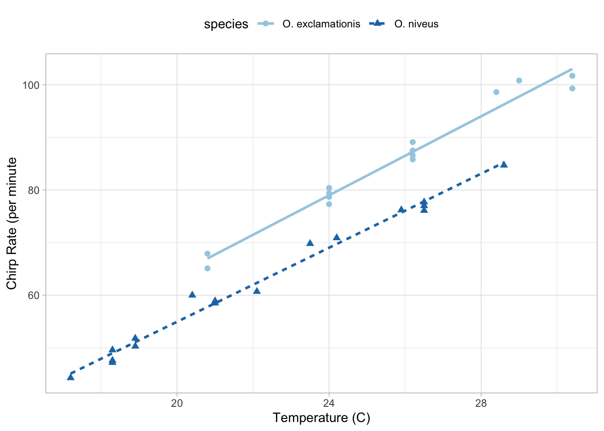
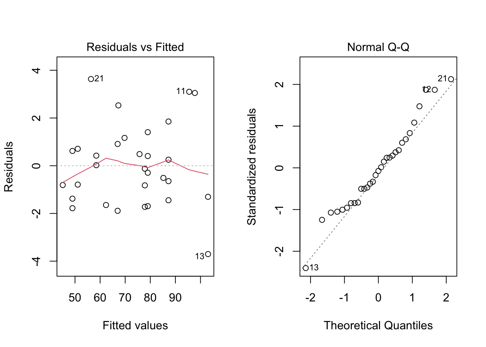
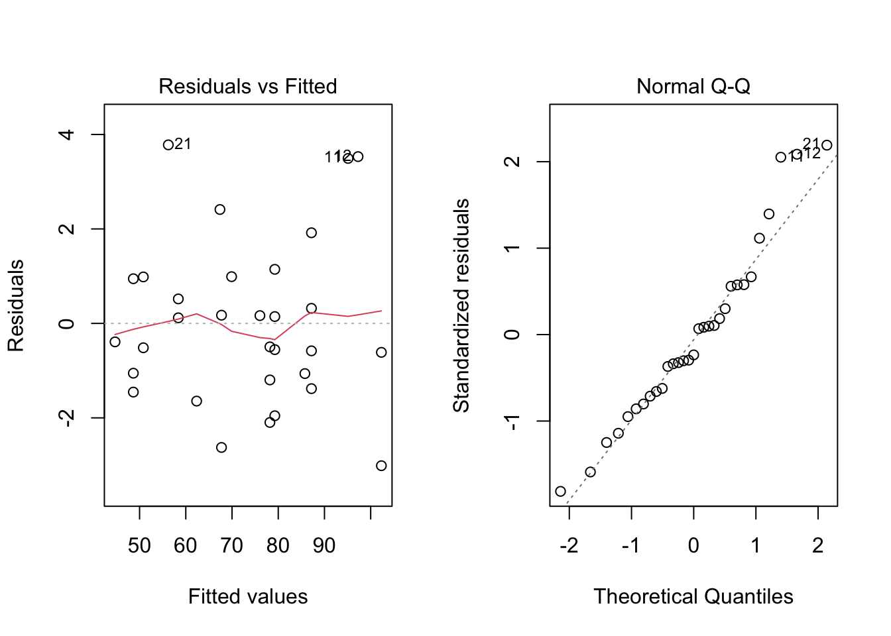
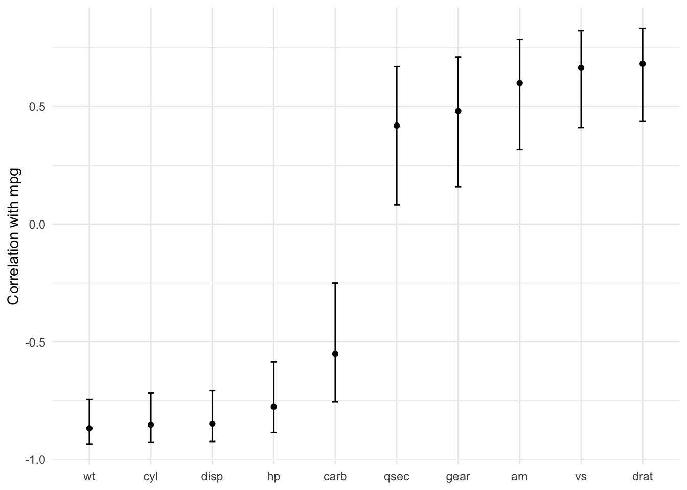

Chapter 3
Review of R Modeling Fundamentals
[1] "species" "temp" "rate" Make a Viz
Code
ggplot(
crickets,
aes(
x = temp,
y = rate,
color = species,
pch = species,
lty = species
)
) +
geom_point(size = 2) +
geom_smooth(method = lm, se = FALSE, alpha = 0.5) +
theme_light() +
labs(
x = "Temperature (C)",
y = "Chirp Rate (per minute"
) +
scale_color_brewer(
palette = "Paired"
) +
theme(legend.position = "top")`geom_smooth()` using formula 'y ~ x'
Interaction terms can be include like this
rate ~ temp + species + temp:species
or a shortcut can be used to expand all interactions containing interactions with 2 variables
rate ~ (temp + species)^2
Or another short to expand factors to include all possible interactions
rate ~ temp * species
Inline functions can be used in the formula
e.g., natural log of temp.
rate ~ log(temp)
literal math can be applied to predictors using the identity function
I()rate ~ I( (temp * 9/5) + 32){converts from C to F}
many functions can be used inside formulas
- e.g., can use
poly(x, 3)to create linear, quadratic, and cubic terms forxto model as main effects.
- e.g., can use
Used
.to model main effects for all columns not on left-hand side of~- e.g.,
~ (.)^3creates main effects and 2- and 3-variable interactions
- e.g.,
Fit a Model
Note that _fit indicates a fitted model
Code
interaction_fit <-
lm(rate ~ (temp + species)^2, data = crickets)Code
interaction_fit |>
broom::tidy() |>
gt::gt()| term | estimate | std.error | statistic | p.value |
|---|---|---|---|---|
| (Intercept) | -11.0408481 | 4.1514800 | -2.6594969 | 1.300079e-02 |
| temp | 3.7514472 | 0.1601220 | 23.4286850 | 1.780831e-19 |
| speciesO. niveus | -4.3484072 | 4.9616805 | -0.8763981 | 3.885447e-01 |
| temp:speciesO. niveus | -0.2339856 | 0.2008622 | -1.1649059 | 2.542464e-01 |
Visualize Fit
Code
par(mfrow = c(1, 2))
plot(interaction_fit, which = 1)
plot(interaction_fit, which = 2)
Fit Model without Interaction Term and Compare Effects Using ANOVA
Code
main_effect_fit <-
lm(rate ~ temp + species, data = crickets)Code
anova(main_effect_fit, interaction_fit)Analysis of Variance Table
Model 1: rate ~ temp + species
Model 2: rate ~ (temp + species)^2
Res.Df RSS Df Sum of Sq F Pr(>F)
1 28 89.350
2 27 85.074 1 4.2758 1.357 0.2542Code
par(mfrow = c(1, 2))
plot(main_effect_fit, which = 1)
plot(main_effect_fit, which = 2)
Code
summary(main_effect_fit)
Call:
lm(formula = rate ~ temp + species, data = crickets)
Residuals:
Min 1Q Median 3Q Max
-3.0128 -1.1296 -0.3912 0.9650 3.7800
Coefficients:
Estimate Std. Error t value Pr(>|t|)
(Intercept) -7.21091 2.55094 -2.827 0.00858 **
temp 3.60275 0.09729 37.032 < 2e-16 ***
speciesO. niveus -10.06529 0.73526 -13.689 6.27e-14 ***
---
Signif. codes: 0 '***' 0.001 '**' 0.01 '*' 0.05 '.' 0.1 ' ' 1
Residual standard error: 1.786 on 28 degrees of freedom
Multiple R-squared: 0.9896, Adjusted R-squared: 0.9888
F-statistic: 1331 on 2 and 28 DF, p-value: < 2.2e-16Predictions
Code
new_values <- data.frame(
species = "O. exclamationis",
temp = 15:20
)
predict(
main_effect_fit,
newdata = new_values
) 1 2 3 4 5 6
46.83039 50.43314 54.03589 57.63865 61.24140 64.84415 Handling Missing Values
Ways to handle missing values:
na.action()na.fail()will throw errorna.omit()will drop records with missing data
lm defaults to na.pass()
Code
new_values$temp[1] <- NA
predict(main_effect_fit, newdata = new_values) 1 2 3 4 5 6
NA 50.43314 54.03589 57.63865 61.24140 64.84415 Using na.fail()
Code
predict(main_effect_fit, newdata = new_values, na.action = na.fail)Using na.omit()
Code
predict(main_effect_fit, newdata = new_values, na.action = na.omit) 2 3 4 5 6
50.43314 54.03589 57.63865 61.24140 64.84415 broom::tidy()
Code
corr_res <-
map(
mtcars |> select(-mpg),
cor.test,
y = mtcars$mpg
)Code
corr_res[[1]]
Pearson's product-moment correlation
data: .x[[i]] and mtcars$mpg
t = -8.9197, df = 30, p-value = 6.113e-10
alternative hypothesis: true correlation is not equal to 0
95 percent confidence interval:
-0.9257694 -0.7163171
sample estimates:
cor
-0.852162 Code
require(broom)Loading required package: broomCode
tidy(corr_res[[1]]) |>
gt::gt()| estimate | statistic | p.value | parameter | conf.low | conf.high | method | alternative |
|---|---|---|---|---|---|---|---|
| -0.852162 | -8.919699 | 6.112687e-10 | 30 | -0.9257694 | -0.7163171 | Pearson's product-moment correlation | two.sided |
Code
corr_res |>
map_dfr(tidy, .id = "predictor") |>
ggplot(
aes(
x = fct_reorder(predictor, estimate)
)
) +
geom_point(
aes(y = estimate)
) +
geom_errorbar(
aes(
ymin = conf.low,
ymax = conf.high
),
width = 0.1
) +
labs(
x = NULL,
y = "Correlation with mpg"
)
Combining base R and tidyverse
Code
split_by_species <-
crickets |>
group_nest(species)
split_by_species# A tibble: 2 × 2
species data
<fct> <list<tibble[,2]>>
1 O. exclamationis [14 × 2]
2 O. niveus [17 × 2]Use purrr::map to create separate models for each species
Code
model_by_species <-
split_by_species |>
mutate(
model = map(data, ~lm(rate ~ temp, data = .x))
)
model_by_species# A tibble: 2 × 3
species data model
<fct> <list<tibble[,2]>> <list>
1 O. exclamationis [14 × 2] <lm>
2 O. niveus [17 × 2] <lm> Collect Coefficients
Code
model_by_species |>
mutate(
coef = map(model, tidy)
) |>
select(species, coef) |>
unnest(cols = c(coef))# A tibble: 4 × 6
species term estimate std.error statistic p.value
<fct> <chr> <dbl> <dbl> <dbl> <dbl>
1 O. exclamationis (Intercept) -11.0 4.77 -2.32 3.90e- 2
2 O. exclamationis temp 3.75 0.184 20.4 1.10e-10
3 O. niveus (Intercept) -15.4 2.35 -6.56 9.07e- 6
4 O. niveus temp 3.52 0.105 33.6 1.57e-15Ooooh set function namespace prefs with conflicted
Code
require(conflicted)Loading required package: conflictedCode
conflict_prefer("filter", winner = "dplyr")[conflicted] Will prefer dplyr::filter over any other packagetidymodels Preferences
Code
require(tidymodels)Loading required package: tidymodels── Attaching packages ────────────────────────────────────── tidymodels 1.0.0 ──✔ dials 1.0.0 ✔ rsample 1.0.0
✔ infer 1.0.2 ✔ tune 1.0.0
✔ modeldata 1.0.0 ✔ workflows 1.0.0
✔ parsnip 1.0.0 ✔ workflowsets 1.0.0
✔ recipes 1.0.1 ✔ yardstick 1.0.0Code
tidymodels_prefer(quiet = FALSE)[conflicted] Removing existing preference[conflicted] Will prefer dplyr::filter over any other package
[conflicted] Will prefer dplyr::select over any other package
[conflicted] Will prefer dplyr::slice over any other package
[conflicted] Will prefer dplyr::rename over any other package
[conflicted] Will prefer dials::neighbors over any other package
[conflicted] Will prefer parsnip::fit over any other package
[conflicted] Will prefer parsnip::bart over any other package
[conflicted] Will prefer parsnip::pls over any other package
[conflicted] Will prefer purrr::map over any other package
[conflicted] Will prefer recipes::step over any other package
[conflicted] Will prefer themis::step_downsample over any other package
[conflicted] Will prefer themis::step_upsample over any other package
[conflicted] Will prefer tune::tune over any other package
[conflicted] Will prefer yardstick::precision over any other package
[conflicted] Will prefer yardstick::recall over any other package
[conflicted] Will prefer yardstick::spec over any other package
── Conflicts ──────────────────────────────────────────── tidymodels_prefer() ──